![]()
Estimate Std. Error z Pr(>|z|) S 2.5 % 97.5 %
942 693 1.36 0.174 2.5 -417 2300
Term: treat
Type: response
Comparison: 1 - 0機械学習を用いた因果推論
2026-08-01
因果推論 at glance
因果関係
- 医学研究の第一の目標と言っても過言ではない
- “Aの薬を使うと患者の予後は良くなるか？”
- 実際は口で言うほど簡単ではない
どうして難しいか？
- 因果関係の根本的問題
- ある個人に「介入をしなかった時」と「介入をした時」の結果を同時に観測できない
- これを解決するために種々の方法が存在する
- 最も有名なのはRCTであるが、RCTは万能ではない
- ConfounderはRandom化でコントロールは出来るが外的妥当性の問題がある
- 観察研究はConfounderがコントロール出来ない
因果関係の考え方
- 大きく分けて2つの考え方がある
- 潜在的アウトカムを考えるRubin流
- DAGを作り、do operatorを使うPearl流
- 詳細は省くが、今回はPearl流のDAGを中心に考える
DAGの基本

- 交絡因子は介入とOutcome両方に関連する上流の因子(介入 <- 交絡 -> アウトカム)
- 中間因子は介入とOutcomeの間にある因子(介入 -> 中間 -> アウトカム)
- Coliderは介入とOutcomeの両方に関連するOutcomeより下流の因子(介入 -> Colider <- アウトカム)
- 基本は交絡因子のみ補正が必要
- 中間因子を補正すると治療効果が薄まる
- Coliderを補正してしまうと逆にバイアスが出てくる
- 分かりやすいのは「その因子に絵の具を落としたら、介入とアウトカムの両方に色がつくなら補正する」というルール(岩波データサイエンス刊行委員会 2016)
世界は結構複雑にできている
- 交絡因子の制御は実際はかなり難しい
- 何を、どう補正するか？
- Stratification、Matching、Weighting・・・・・・
- 最もシンプルなのは回帰モデル
交絡因子の制御の方法
- Propensity scoreの値を5分位に分けて、各々の層同士で比較して最後に統合する
Estimate Std. Error z Pr(>|z|) S 2.5 % 97.5 %
926 687 1.35 0.178 2.5 -421 2273
Term: treat
Type: response
Comparison: 1 - 0- Propensity scoreが似たものを1:1でMatchingさせる
- 治療側、コントロール側のどちらに合わせるかでATT, ATUが分かる
Estimate Std. Error z Pr(>|z|) S 2.5 % 97.5 %
1637 797 2.05 0.04 4.6 75.1 3199
Term: treat
Type: probs
Comparison: 1 - 0- Propensity scoreをベースに色々な重みづけをしてバランスをとる
- 疑似RCTとするAverate Treatment Overlappingなども可能(Thomas et al. 2020)
通常の回帰モデル
- 因果推論の時の王道中の王道
- ただし、これらは基本は「他の交絡因子の値を固定した上で、treatを0 → 1にした時の平均的な変化」という解釈
- 細かいEstimandは指定できない
- その上で、交絡因子が補正しきれるかは不明
次の手
- 自由度を上げるために、連続値をrestricted cubic splineに入れる
- 交互作用項を入れる などなど
- AIPW, TMLE, orthogonalizationなどでDoubly robustな手法
- Outcome modelとPropensity modelを用いてDoubly robustにする
- これらのモデルで機械学習を入れることも可能
特殊な手法
library(AIPW)
library(SuperLearner) # AIPWからSL.glmを使うために必要
lalonde <- MatchIt::lalonde
W <- lalonde[c("age", "educ", "race", "married", "nodegree", "re74", "re75")]
set.seed(123)
fit <- AIPW$new(
Y = lalonde$re78, A = lalonde$treat, W = W,
Q.SL.library = "SL.glm", g.SL.library = "SL.glm",
k_split = 5, verbose = FALSE
)
fit$fit()
fit$summary()
fit$result["Mean Difference", ]# A tibble: 1 × 4
method estimate conf_low conf_high
<chr> <dbl> <dbl> <dbl>
1 AIPW 1067. -1035. 3168.\[\begin{aligned} \hat{\mu}_1^{\mathrm{AIPW}} &= \frac{1}{n}\sum_{i=1}^{n} \left[ \underbrace{\hat{\mu}_1(X_i)}_{\text{Outcome prediction}} + \underbrace{ \frac{A_i}{\hat{e}(X_i)} \{Y_i-\hat{\mu}_1(X_i)\} }_{\text{IPW correction}} \right] \\[10pt] \hat{\mu}_0^{\mathrm{AIPW}} &= \frac{1}{n}\sum_{i=1}^{n} \left[ \underbrace{\hat{\mu}_0(X_i)}_{\text{Outcome prediction}} + \underbrace{ \frac{1-A_i}{1-\hat{e}(X_i)} \{Y_i-\hat{\mu}_0(X_i)\} }_{\text{IPW correction}} \right] \end{aligned}\]
- イメージだと、G-computationによるアウトカムモデルでの仮想データに以下の補正を加えている
- 治療を受ける/受けないのPropensity scoreの補正
- Doubly robustになっていて、どちらかが一致すれば結果にバイアスは生まれない
# A tibble: 1 × 4
method estimate conf_low conf_high
<chr> <dbl> <dbl> <dbl>
1 TMLE 585. -992. 2163.\[\widehat Q^{\,0}(a,W_i) = \widehat{\mathrm E} \left( Y_i\mid A_i=a,W_i \right) \\[6pt] \widehat g(W_i) = \widehat{\Pr} \left( A_i=1\mid W_i \right) \\[6pt] \begin{aligned} \widehat Q^{\,0}_1(W_i) &= \widehat Q^{\,0}(1,W_i) \\[6pt] \widehat Q^{\,0}_0(W_i) &= \widehat Q^{\,0}(0,W_i) \end{aligned} \\[6pt] \widehat{\mathrm{ATE}}_{\mathrm{TMLE}} = \frac{1}{n} \sum_{i=1}^{n} \left[ \widehat Q^{\,0}_1(W_i) - \widehat Q^{\,0}_0(W_i) + \widehat\varepsilon \left\{ \frac{1}{\widehat g(W_i)} + \frac{1}{1-\widehat g(W_i)} \right\} \right]\]
- アウトカムモデルによる予測と実測値の残差を出す
- 傾向スコアの逆数から作ったclever covariateで回帰して修正量を求める
- アウトカムモデルと修正量でAIPWをしているイメージ
- 簡単に言うと強くなったAIPW
lalonde <- MatchIt::lalonde
xvars <- "age + educ + race + married + nodegree + re74 + re75"
m_y <- glm(as.formula(paste("re78 ~", xvars)), gaussian(), data = lalonde)
m_a <- glm(as.formula(paste("treat ~", xvars)), binomial(), data = lalonde)
dat <- transform(
lalonde,
y_resid = residuals(m_y, type = "response"),
a_resid = treat - fitted(m_a)
)
fit <- glm(y_resid ~ 0 + a_resid, gaussian(), data = dat)
coef(summary(fit))["a_resid", ]# A tibble: 1 × 4
method estimate conf_low conf_high
<chr> <dbl> <dbl> <dbl>
1 Orthogonalization 1233. -292. 2758.\[\begin{aligned} Y_i &= \theta_0 D_i + g_0(X_i) + \varepsilon_i, \qquad \mathbb{E}[\varepsilon_i \mid X_i, D_i] = 0, \\[6pt] D_i &= m_0(X_i) + V_i, \qquad \mathbb{E}[V_i \mid X_i] = 0. \end{aligned}\]
- 「アウトカムの実測値と、共変量から予測したアウトカムとの差（残差）」を、「実際の介入と、共変量から予測した介入確率との差（残差）」で回帰する
- outcome側はGaussian GLM、treatment側はbinomial GLMで残差化している
- treatment側も線形確率モデルで残差化した場合は、Frisch–Waugh–Lovell定理により通常の線形回帰と一致する
しかしながら・・・・・・
- 結局のところ、モデルは人が作らないといけない
- 非線形な関係も、Interaction termもいずれにせよ人が作る必要がある
- 治療効果の異質性はSubgroup analysisを行えばわかるが多重検定の問題となる
- この治療は眼の前の患者さんに有益ですか？
Estimandの重要性
- 医学論文において、患者の背景というのはRCTの解釈で非常に重要
- Mitra valveのTEERにおけるCOAPT vs. MITRA-FR trial
- Cryptogenic strokeに対するPFO closureのRCTの結果の変遷
- AFのrhythm controlの優位性を示せたEAST-AFNET4 trial
- 患者の性質によって異なる介入の治療効果(Estimand)がある(Little and Lewis 2021)
目の前の患者への有効性
- 因果推論の根源的問題により、ある個人への治療効果(Individual treatment effect)は原理的に推測不可能
- 一方で、患者背景の組み合わせ(46歳、HTN、DMあり、脳梗塞既往なしなど)における治療効果は推定可能
- これをIndividualized treatment effect(ITE)といったりConditional average treatment effect(CATE)と言ったりする(Segal et al. 2023)
機械学習 at glance
機械学習とは
- 機械学習の定義「学習はデータから学習し、初めてのデータに対して一般化し、明示的な指示なしにタスクを実行できる統計アルゴリズム」
- 簡単にいうとパターン認識
- 正解がある: 教師つき学習→予測に用いる
- 正解がない: 教師なし学習→記述の一種
代表的な機械学習

- これはRandom forest
- 小さい木のモデルを並列ではなく直列にするとXGBoostなど

- 沢山のLogistic regression modelを重ねたようなもの
機械学習の強みと弱み
- Pros
- データから関係性を柔軟に読み取る
- 例えばTree based modelは相互作用を自然に扱うことが出来る
- Cons
- 複雑なモデルはBlack boxになる
- 現実世界への有用性と妥当性の評価が必要
- Overfittingの問題
- モデルの評価が必須
- 複雑なモデルはBlack boxになる
機械学習と因果推論の出会い
因果推論における機械学習の役割
- アウトカムモデル、PS modelを柔軟に扱う
- Interaction termを自然に扱える
- 柔軟なモデルであれば、HTEを自然に扱えないか？
機械学習を用いた因果推論について
- 大別してMeta learner系とmodified machine-learning系(代表としてCausal forest)に分けられる(Segal et al. 2023)
- 柔軟なモデル作成としてMeta learnerがあり、HTEに強いのがCausal forest
- とはいえ、Causal forestだけで良い気もする
注意点
- 基本的にUnobserved confoundingには対応できない
- Collider biasには対応できない 魔法の杖ではなく、Designは常に重要
- RCTなどでATEが0だったものについてHTEを探すのは基本的に無意味な事が多い(Segal et al. 2023)
meta-learner系
S-learner

s-learner
- 最も基本的なmeta-learner
- ML modelを用いたG-computationと考えればいい
- Simpleなゆえに了解しやすい
- ただし、介入よりも影響が大きい因子(年齢や腎機能など)の影響が大きいと介入効果が消えることもある(特にLASSOなど)
T-learner

t-learner
- 介入の因子を重要視したmeta-learner
- 介入ありの群でのML modelと介入なし群でML modelを別個に作りG-computation
- 介入の効果が消えることはない
- ただし、Doubly robustさはない
X-learner, DR-learner

x-learner
- Propensity score weightingを導入したmeta-learner
- T-learnerで推定した治療効果を推測する機械学習モデルにIPWを組み合わせている
- 結構複雑、メインでないモデルのパラメーターを「局外パラメーター」という
- DR-learnerは最後のPropensity scoreの使い方がAIPWになっている
R-learner

r-learner
- OrthogonalizationをML modelで行っているという理解
- 交絡因子の影響を除外するというところで強みがある
- HTEをやる場合は最後の回帰が少し特殊
どれがいいの？
| Algorithm | 強み（Strengths） | 限界（Limitations） |
|---|---|---|
| S-learner | - シンプル - 治療効果が単純、またはゼロの場合、T-learnerより優れた性能を示す |
- 治療効果の推定に直接最適化されていない - 変数選択を行う手法をベース学習器に用いると、治療変数がモデルから除外される可能性がある - 治療群と対照群の人数が不均衡な場合、不安定になる |
| T-learner | - シンプル - 治療群と対照群を分けて明示的にモデル化する - 治療効果の異質性が強い場合、S-learnerより優れた性能を示す |
- 治療効果の推定に直接最適化されていない - 治療群と対照群の人数が不均衡な場合、不安定になる |
| X-learner / DR-learner | - 異質な治療効果を直接推定する - 観察研究でよくみられる不均衡な研究デザインにおいて、特に有効である |
- 複雑である - 極端な傾向スコアが存在する場合、不安定になる - 傾向スコアモデルの誤設定に影響されやすい |
| R-learner | - 異なるサブサンプルを用いて、補助的パラメータを推定し、CATEを予測する - 治療効果に対する直接的な損失関数を構成できる |
- 複雑である - 極端な傾向スコアが存在する場合、不安定になる - 傾向スコアモデルの誤設定に影響されやすい |
- S-learnerが最も直感的ではあるが・・・・・・
- 一番の問題は95%信頼区間などは出せない
- 過去のReviewだとDR-learnerが良さそう
Causal forestについて
Random forestについて
- Tree-based modelの大御所
- Bootstrapをした行にランダムで少数の変数で簡単な決定木をたくさん作る
- 当然ながら、この時は「Outcome」を予測するようにTreeを分割させる
- 自然に交互作用や非線形の関係を推測可能
- そのTreeの多数決で予測を行う
Causal forestの原理
- HTE専用の機械学習
- 基本はRandom forestだが、「治療効果の差が最も出やすいよう」に決定木を分割する
- Overfittingを防ぐために”Honest”を用いる
- 分割する部位はサンプルで決定、選択されていない残りのSampleで治療効果を決める
Model作成の実務
結局どれがいいの？
- ATEの場合はmeta-learnerでも良いがCausal forestでも別に良い
- HTEの場合はCausal forestが現実的に最も良い
Overfittingを避けるために
- 簡単に言うとCross validationを組み合わせる
- Causal forestの場合は、分岐を決めるデータセットと、そこで得られる治療効果を分ける”honesty”という概念が独特
- Data leakageを防ぐのは難しいのでPackageにお任せが良さそう
モデルの評価の仕方の概論
- ModelをBlackboxから出す: ICE, PDP, SHAPなど
- Tree Interpreter
- Modelの性能の評価
- Discrimination, Calibrationなど
- モデルの実施方法
- Policy tree
ModelをBlackboxから出す
- 通常の予測モデルと大きな変化はない
- モデルが何をみているか？: SHAP
- ある連続値の共変量との関係性: PDP, ICE
- 人に解釈できる方法として、HTEを浅い決定木で回帰させる”Surrogate tree”というのもある
モデルの評価の仕方
- 実際の研究では、HTEのモデルもTRIPOD-AIに従う事が推奨されている(Segal et al. 2023; Collins et al. 2024)
- 通常のモデルと一緒で独立したtest datasetを用意しておく
- 診る項目は2種類
- Discrimination
- GATE, RATE(AUTOC), Qini
- Calibration
- best linear predictionの係数
- Discrimination
- Meta-learnerの場合は通常の予測モデルの評価も行う
CATEを図るモデル評価の難しさ
- 通常のモデルの評価方法は”正解”に対して、どの程度予測値が迫っているかを比べる
- 一方で、因果推論モデルの場合は個人レベルの”正解(Individual treatment effects)“は決して分からない
- その為、【ある程度の一貫性】を診たり、【ある群でのATE】を”正解ラベル”として比較している
Discrimination ~ GATES
- 各人で予想した治療効果を順番に並べる
- 5分位くらいにRankを作って、その中でのITEの平均を出す(予測値)
- 各々の群を一つのデータセットとして別個にATEを出す(真値)
- 実際にランキング通りかどうかを比べる
Discrimination ~ RATES
- Rankingを連続的に見ていく閾値
- 上位n%でのITEの平均と全体のATEの差をとる(Benefit)
AUTOC(Targeting operator curve)とQini係数
- Rankingを連続的に見ていく閾値
- 上位n%でのITEの平均と全体のATEの差をとる(Benefit)
- 横軸にn%、縦軸にこのBenefitの値を並べて面積をとる
- どちらかというと妥当性を診ているイメージ
Best linear prediction
- 予測されるITE ~ 予測値 + Propensity score + 誤差項 として回帰させたもの
- 予測値への係数が1であれば良い
Calibration
- GATESのようにランキングにしてGroup毎でのATEとのCalibration plot
モデルの実施方法
- 誰に対して行うとIndividualized treatment effectが1より高くなるかを見る決定木をPolicy treeという
- Surrogate treeと異なり、ITEが
実務において
- Pythonだと
econmlのDRTester - Rだと
grfで可能
Advanced
Topic
- 95%信頼区間が出せるかどうか？
- Missingnessについて
- Sensitivity analysisはどうすればいい？
- 生存分析について
95%信頼区間が出せるか？
- Causal forestは出せるが通常のMLは信頼区間は出せない
- 機械学習モデルの代表的な弱点
- いわゆる、AIPWやTMLEの局外パラメーターだけMLにして最終モデルを通常のGlmやSuperlearnerにする方法もある
Missingnessについて
- 通常の機械学習では多重代入は使えない
- 一方でtree-based approachはnaturalに欠損値を扱える
- 欠損値だったら……という条件を決定木に読ませる
Sensitivity analysisはどうすればいい？
EconMLではRefutation methodで可能(Feuerriegel et al. 2024)- 治療やアウトカムをランダムに数値に置き換える, ランダムな数値の交絡因子を入れても問題ないか, 未測定交絡因子を入れても大丈夫かどうか など
生存分析について
- econmlではまだ実装されていない
- meta learnerで無理やりやるなら、pseudopopulation(Jackknife法を使って、打ち切りデータを最後まで観察できたものとする)で予測させるなど
- causal forestではnaturalに実装されている
- 論文にはBalanced Individual Treatment Effect in Survival Data (BITES)なども紹介されている(Möller et al. 2026)
実践！
Test-dataset①

- 治療効果は各々別個にいれてある
- DAGは上記の通り
- CAがメインのInterventionで解析をするアウトカムは二値値のbin_outcome(死亡または心不全入院の有無など)
- SESは観測されない交絡因子
Test-dataset②
# A tibble: 6 × 16
id age sexm1 bmi hf bnp lvef palpitation ca bin_outcome
<int> <int> <int> <dbl> <int> <int> <int> <int> <int> <int>
1 1 39 1 25.5 0 8 57 0 1 0
2 2 62 0 18.8 0 718 44 0 1 1
3 3 56 1 28.0 0 261 54 1 1 0
4 4 70 0 17.7 0 79 48 0 0 1
5 5 73 0 25.0 0 187 48 0 0 1
6 6 58 1 27.7 0 29 54 1 1 1
# ℹ 6 more variables: bin_event_free <int>, bin_outcome_no_hte <int>,
# afeqt_treatment_effect <dbl>, afeqt_os <dbl>, eventtime <dbl>, status <int>Toy dataの可視化


Modification因子と治療効果
# A tibble: 1 × 6
n ate_rd ite_rd_sd ate_rd_se ci_lower ci_upper
<int> <dbl> <dbl> <dbl> <dbl> <dbl>
1 3000 -0.00000531 0.104 0.00191 -0.00374 0.00373- ATEはほぼ0


Meta-learners
import numpy as np
import pandas as pd
from econml.metalearners import SLearner
from sklearn.ensemble import HistGradientBoostingClassifier
from sklearn.model_selection import train_test_split
from xgboost import XGBRegressor
toy_data = r.toy_data.copy()
feature_names = ["age", "sexm1", "bmi", "hf", "bnp", "lvef"]
X = toy_data.loc[:, feature_names].astype(float)
Y = toy_data["bin_outcome"].astype(int)
T = toy_data["ca"].astype(int)
# treatment と outcome の4群がおおむね保たれるように分割する
strata = T.astype(str) + "_" + Y.astype(str)
X_train, X_test, Y_train, Y_test, T_train, T_test = train_test_split(
X, Y, T,
test_size=0.2,
random_state=123,
stratify=strata,
)
xgb_binary_params = {
"objective": "binary:logistic",
"eval_metric": "logloss",
"n_estimators": 300,
"learning_rate": 0.05,
"max_depth": 3,
"min_child_weight": 10,
"subsample": 0.8,
"colsample_bytree": 0.8,
"reg_lambda": 1.0,
"random_state": 123,
"n_jobs": -1,
}
# objective="binary:logistic" では predict() が P(Y=1 | X, T) を返す
outcome_model = XGBRegressor(
**xgb_binary_params,
)
s_learner = SLearner(overall_model=outcome_model)
s_learner.fit(Y_train, T_train, X=X_train)
# 各人の CATE = P(Y=1|do(T=1), X) - P(Y=1|do(T=0), X)
s_cate_rd = np.asarray(
s_learner.effect(X_test, T0=0, T1=1)
).reshape(-1)
s_effect_df = pd.DataFrame({
"id": toy_data.loc[X_test.index, "id"].to_numpy(),
"cate_rd": s_cate_rd,
})
print(s_effect_df.head())
print(f"ATE in test set (risk difference): {s_cate_rd.mean():.3f}") id cate_rd
1 1213 -0.058573544
2 241 -0.014187932
3 1960 0.077415705
4 485 0.028623044
5 726 0.006469309
6 2657 -0.090554357ATE in test set (risk difference): 0.003s_cate_rdは確率スケールの治療効果（risk difference）であり、負の値はca = 1によるイベントリスク低下を表す- S-learnerは1つのモデルで \(E(Y \mid X, T)\) を学習し、各対象者について
T = 1とT = 0の予測確率の差を取る - 因果効果として解釈するには、未測定交絡がないこと、positivity、consistencyなどの仮定が必要
from econml.metalearners import TLearner
t_outcome_model = XGBRegressor(
**xgb_binary_params,
)
# T=0 と T=1 で別々の outcome model を学習する
t_learner = TLearner(models=t_outcome_model)
t_learner.fit(Y_train, T_train, X=X_train)
t_cate_rd = np.asarray(
t_learner.effect(X_test, T0=0, T1=1)
).reshape(-1)
t_effect_df = pd.DataFrame({
"id": toy_data.loc[X_test.index, "id"].to_numpy(),
"cate_rd": t_cate_rd,
})
print(t_effect_df.head())
print(f"ATE in test set (risk difference): {t_cate_rd.mean():.3f}") id cate_rd
601 1213 -0.08676803
602 241 -0.05012167
603 1960 0.05148602
604 485 -0.07560945
605 726 0.03668851
606 2657 0.06797814ATE in test set (risk difference): -0.010- T-learnerは
T = 0とT = 1で2つの予測確率モデルを作り、その差をCATEとする - 各治療群のサンプル数が少ない場合、それぞれのoutcome modelが不安定になりやすい
from econml.metalearners import XLearner
from sklearn.ensemble import HistGradientBoostingRegressor
x_outcome_model = XGBRegressor(
**xgb_binary_params,
)
# imputed treatment effect（連続値）を学習するための回帰モデル
x_cate_model = HistGradientBoostingRegressor(
learning_rate=0.05,
max_iter=200,
max_leaf_nodes=15,
min_samples_leaf=30,
l2_regularization=1.0,
random_state=123,
)
# P(T=1 | X) を学習するモデル
x_propensity_model = HistGradientBoostingClassifier(
learning_rate=0.05,
max_iter=150,
max_leaf_nodes=15,
min_samples_leaf=30,
l2_regularization=1.0,
random_state=123,
)
x_learner = XLearner(
models=x_outcome_model,
cate_models=x_cate_model,
propensity_model=x_propensity_model,
)
x_learner.fit(Y_train, T_train, X=X_train)
x_cate_rd = np.asarray(
x_learner.effect(X_test, T0=0, T1=1)
).reshape(-1)
x_effect_df = pd.DataFrame({
"id": toy_data.loc[X_test.index, "id"].to_numpy(),
"cate_rd": x_cate_rd,
})
print(x_effect_df.head())
print(f"ATE in test set (risk difference): {x_cate_rd.mean():.3f}") id cate_rd
1201 1213 -0.18394315
1202 241 -0.12883558
1203 1960 0.06132306
1204 485 -0.20044873
1205 726 0.14357981
1206 2657 0.08356146ATE in test set (risk difference): -0.006- X-learnerは2つのoutcome modelから治療効果を補完し、その疑似効果をさらに回帰モデルで学習する
- 最後にpropensity scoreを使って、対照群由来と治療群由来のCATEを統合する
from econml.dml import NonParamDML
r_learner = NonParamDML(
model_y=HistGradientBoostingClassifier(
learning_rate=0.05,
max_iter=200,
max_leaf_nodes=15,
min_samples_leaf=30,
l2_regularization=1.0,
random_state=123,
),
model_t=HistGradientBoostingClassifier(
learning_rate=0.05,
max_iter=150,
max_leaf_nodes=15,
min_samples_leaf=30,
l2_regularization=1.0,
random_state=123,
),
model_final=HistGradientBoostingRegressor(
learning_rate=0.05,
max_iter=200,
max_leaf_nodes=15,
min_samples_leaf=30,
l2_regularization=1.0,
random_state=123,
),
discrete_outcome=True,
discrete_treatment=True,
cv=5,
random_state=123,
)
# NonParamDML implements the R-learner residual-on-residual objective.
r_learner.fit(Y_train, T_train, X=X_train)
r_cate_rd = np.asarray(
r_learner.effect(X_test, T0=0, T1=1)
).reshape(-1)
r_effect_df = pd.DataFrame({
"id": toy_data.loc[X_test.index, "id"].to_numpy(),
"cate_rd": r_cate_rd,
})
print(r_effect_df.head())
print(f"ATE in test set (risk difference): {r_cate_rd.mean():.3f}") id cate_rd
1801 1213 -0.2973008
1802 241 -0.1484302
1803 1960 0.1327312
1804 485 -0.6428122
1805 726 0.1524836
1806 2657 0.1501450ATE in test set (risk difference): -0.006- R-learnerはoutcomeとtreatmentをcross-fittingで残差化し、残差同士の関係からCATEを学習する
NonParamDMLの非線形final modelにより、HTEを柔軟に表現する
from econml.dr import DRLearner
dr_learner = DRLearner(
model_propensity=HistGradientBoostingClassifier(
learning_rate=0.05,
max_iter=150,
max_leaf_nodes=15,
min_samples_leaf=30,
l2_regularization=1.0,
random_state=123,
),
model_regression=HistGradientBoostingClassifier(
learning_rate=0.05,
max_iter=200,
max_leaf_nodes=15,
min_samples_leaf=30,
l2_regularization=1.0,
random_state=123,
),
model_final=HistGradientBoostingRegressor(
learning_rate=0.05,
max_iter=200,
max_leaf_nodes=15,
min_samples_leaf=30,
l2_regularization=1.0,
random_state=123,
),
discrete_outcome=True,
min_propensity=0.01,
cv=5,
random_state=123,
)
# nuisance modelはcv=5でcross-fittingされる
dr_learner.fit(Y_train, T_train, X=X_train)
dr_cate_rd = np.asarray(
dr_learner.effect(X_test, T0=0, T1=1)
).reshape(-1)
dr_effect_df = pd.DataFrame({
"id": toy_data.loc[X_test.index, "id"].to_numpy(),
"cate_rd": dr_cate_rd,
})
print(dr_effect_df.head())
print(f"ATE in test set (risk difference): {dr_cate_rd.mean():.3f}")
# 5つのlearnerを同じtest setで比較する
learner_summary = pd.DataFrame({
"learner": [
"S-learner",
"T-learner",
"X-learner",
"R-learner",
"DR-learner",
],
"ate_rd": [
s_cate_rd.mean(),
t_cate_rd.mean(),
x_cate_rd.mean(),
r_cate_rd.mean(),
dr_cate_rd.mean(),
],
"cate_sd": [
s_cate_rd.std(ddof=1),
t_cate_rd.std(ddof=1),
x_cate_rd.std(ddof=1),
r_cate_rd.std(ddof=1),
dr_cate_rd.std(ddof=1),
],
})
print(learner_summary.round(3)) id cate_rd
2401 1213 -0.66810596
2402 241 -0.08076074
2403 1960 0.23896952
2404 485 -0.98426791
2405 726 0.22035149
2406 2657 0.17602185ATE in test set (risk difference): -0.000 learner ate_rd cate_sd
1 S-learner 0.003 0.079
2 T-learner -0.010 0.161
3 X-learner -0.006 0.155
4 R-learner -0.006 0.219
5 DR-learner 0.000 0.285discrete_outcome=Trueにより、EconMLがoutcome classifierの陽性確率を使用する- propensity modelまたはoutcome modelのどちらか一方が正しく推定されればATE/CATE推定のバイアスを抑えられる、というdoubly robust性を利用する
min_propensity=0.01は、推定propensity scoreが0または1に近い場合の極端な補正を制限する
Meta-learnerのCalibration / Discrimination
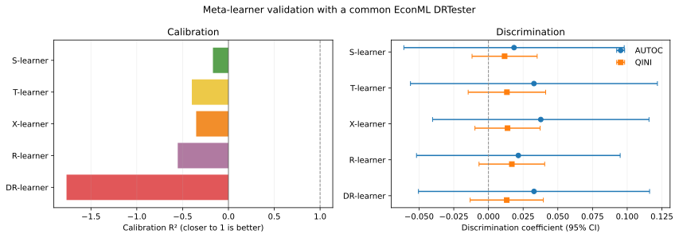
- 5モデルを同一のtrain/test splitと、EconML
DRTesterが作る共通のdoubly robust outcomeで横並びに評価 - Calibration \(R^2\) は1に近いほど良いが、通常のoutcome predictionの \(R^2\) ではなく、CATEのgroup calibration指標
- DiscriminationはAUTOC / QINI（0より大きいほど、治療効果の順位付け能力が高い）で評価
Meta-learnerのGATE
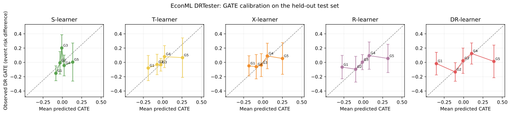
train setの予測CATE五分位でtest setを分け、各群の予測CATE平均とdoubly robust GATE（95% CI）を比較する。破線は完全なgroup calibrationを示す。
Causal forest
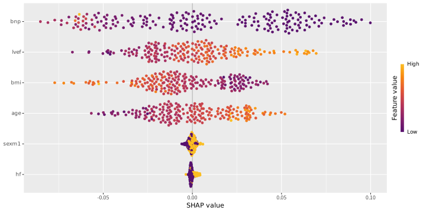
control treated
[1,] 0.1189504 -0.07283693
[2,] 1.0004347 1.08330540
[3,] 0.3350726 -0.14037399
[4,] 1.0104821 1.00955164
[5,] 1.0509012 0.87677371
[6,] 0.3772709 1.44629908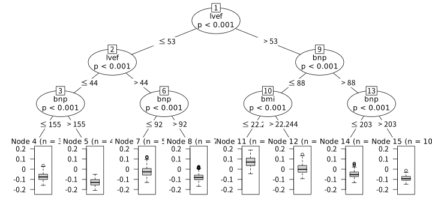
policy_tree object
Tree depth: 2
Actions: 1: control 2: treated
Variable splits:
(1) split_variable: bmi split_value: 27.0173
(2) split_variable: bnp split_value: 90
(4) * action: 1
(5) * action: 2
(3) split_variable: lvef split_value: 58
(6) * action: 2
(7) * action: 1 GRFの単体評価
# A tibble: 5 × 4
metric estimate std_error p_value
<chr> <dbl> <dbl> <dbl>
1 Mean forest calibration 1.48 3.87 0.351
2 Differential forest calibration 0.848 0.23 0
3 Grouped calibration R2 0.336 NA NA
4 AUTOC 0.049 0.017 0.002
5 QINI 0.015 0.004 0 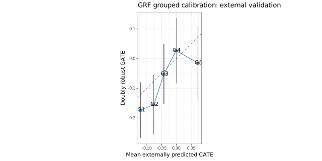
GRF内だけで、OOB CATE、grf::get_scores()、grf::test_calibration()を用いて評価する。Grouped calibration \(R^2\) はEconMLと同じ式をRで計算した補助指標で、grf組み込みの指標ではない。
GRFのDiscrimination (RATE)
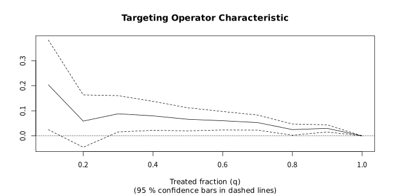
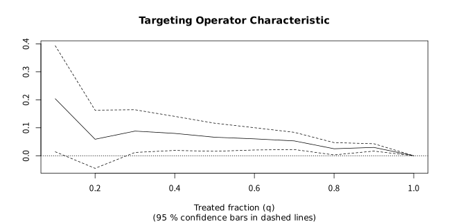
EconMLモデルを説明する（Python）
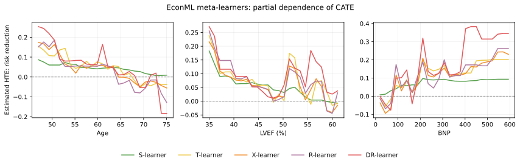
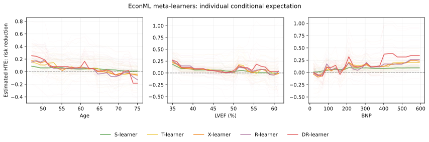
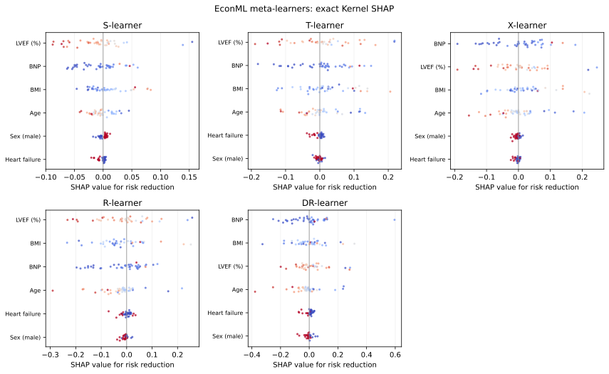
PDP、ICE、Kernel SHAPの計算と描画はPython内で完結し、Quartoはtargetsが追跡するSVGを表示するだけである。ここでもGRFは比較対象に含めない。
GRFモデルを説明する（R）
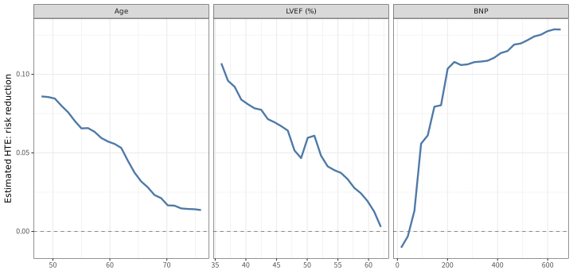
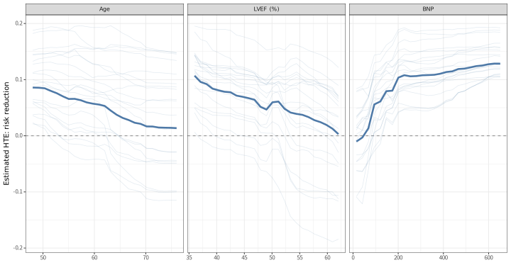
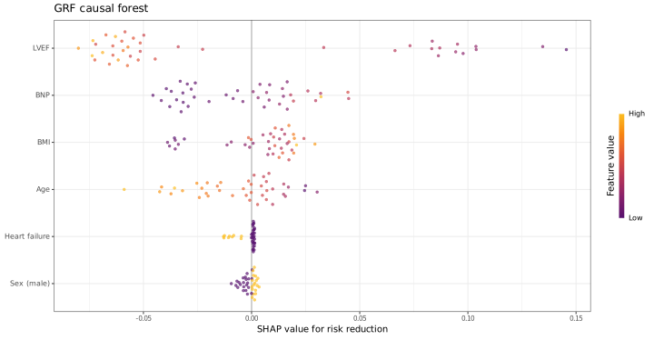
EconMLモデルをSingle Treeで説明
各ノードの value は予測イベントリスクの低下量（正ほどCAが有益）。全モデルを同じtest setで近似し、葉の最小人数をtest setの5%（最低10人）に設定した。
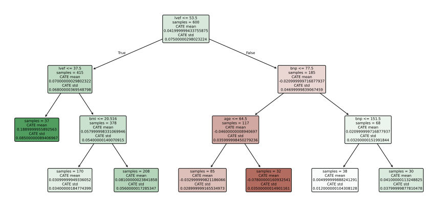
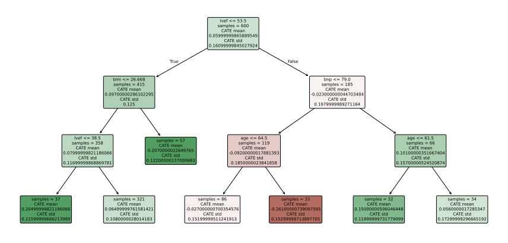
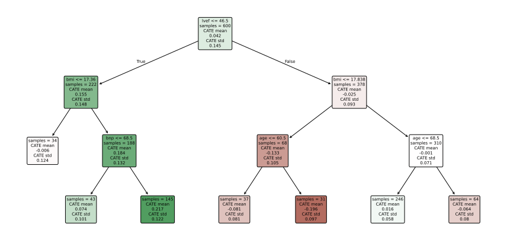
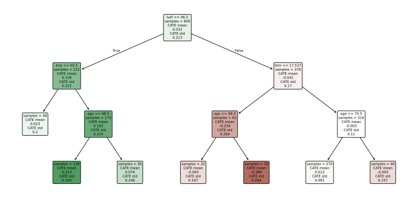
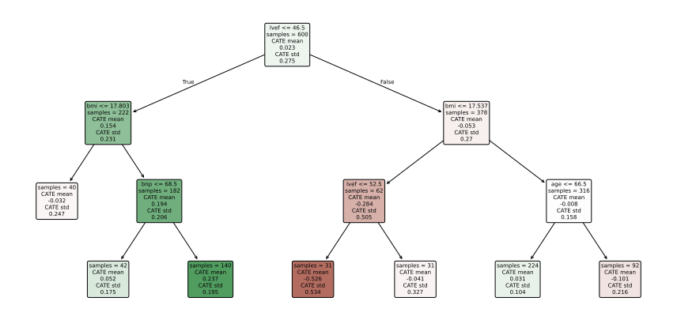
─ Session info ───────────────────────────────────────────────────────────────
setting value
version R version 4.5.3 (2026-03-11)
os Ubuntu 24.04.4 LTS
system x86_64, linux-gnu
ui X11
language (EN)
collate ja_JP.UTF-8
ctype ja_JP.UTF-8
tz Asia/Tokyo
date 2026-09-08
pandoc 3.8.3 @ /home/figarofuga/analysis/pixi-test/.pixi/envs/default/bin/ (via rmarkdown)
quarto 1.9.38 @ /home/figarofuga/analysis/pixi-test/.pixi/envs/default/bin/quarto
─ Packages ───────────────────────────────────────────────────────────────────
package * version date (UTC) lib source
backports 1.5.1 2026-04-03 [1] CRAN (R 4.5.3)
base64url 1.4 2018-05-14 [1] CRAN (R 4.5.1)
boot 1.3-32 2025-08-29 [1] CRAN (R 4.5.1)
cachem 1.1.0 2024-05-16 [1] CRAN (R 4.5.1)
callr 3.7.6 2024-03-25 [1] CRAN (R 4.5.1)
checkmate 2.3.3 2025-08-18 [1] CRAN (R 4.5.1)
cli 3.6.6 2026-04-09 [1] CRAN (R 4.5.3)
codetools 0.2-20 2024-03-31 [1] CRAN (R 4.5.1)
curl 7.1.0 2026-04-22 [1] CRAN (R 4.5.3)
dagitty * 0.3-4 2023-12-07 [1] CRAN (R 4.5.1)
data.table 1.17.8 2025-07-10 [1] CRAN (R 4.5.1)
DiagrammeR 1.0.12 2026-04-27 [1] CRAN (R 4.5.3)
digest 0.6.39 2025-11-19 [1] CRAN (R 4.5.2)
dplyr * 1.2.1 2026-04-03 [1] CRAN (R 4.5.3)
evaluate 1.0.5 2025-08-27 [1] CRAN (R 4.5.1)
farver 2.1.2 2024-05-13 [1] CRAN (R 4.5.1)
fastmap 1.2.0 2024-05-15 [1] CRAN (R 4.5.1)
forcats * 1.0.1 2025-09-25 [1] CRAN (R 4.5.1)
Formula 1.2-5 2023-02-24 [1] CRAN (R 4.5.1)
generics 0.1.4 2025-05-09 [1] CRAN (R 4.5.1)
GGally * 2.4.0 2025-08-23 [1] CRAN (R 4.5.1)
ggdag * 0.2.13 2024-07-22 [1] CRAN (R 4.5.1)
ggforce 0.5.0 2025-06-18 [1] CRAN (R 4.5.1)
ggplot2 * 4.0.3 2026-04-22 [1] CRAN (R 4.5.3)
ggraph 2.2.2 2025-08-24 [1] CRAN (R 4.5.2)
ggrepel 0.9.8 2026-03-17 [1] CRAN (R 4.5.3)
ggstats 0.13.0 2026-03-06 [1] CRAN (R 4.5.2)
glue 1.8.1 2026-04-17 [1] CRAN (R 4.5.3)
graphlayouts 1.2.4 2026-06-19 [1] CRAN (R 4.5.3)
grf * 2.6.1 2026-03-04 [1] CRAN (R 4.5.3)
gridExtra 2.3.1 2026-06-25 [1] CRAN (R 4.5.3)
gtable 0.3.6 2024-10-25 [1] CRAN (R 4.5.1)
here * 1.0.2 2025-09-15 [1] CRAN (R 4.5.1)
hms 1.1.4 2025-10-17 [1] CRAN (R 4.5.1)
htmltools 0.5.9 2025-12-04 [1] CRAN (R 4.5.2)
htmlwidgets 1.6.4 2023-12-06 [1] CRAN (R 4.5.1)
igraph 2.3.3 2026-06-26 [1] CRAN (R 4.5.3)
inum 1.0-5 2023-03-09 [1] CRAN (R 4.5.1)
jsonlite 2.0.0 2025-03-27 [1] CRAN (R 4.5.1)
knitr 1.51 2025-12-20 [1] CRAN (R 4.5.2)
labeling 0.4.3 2023-08-29 [1] CRAN (R 4.5.1)
lattice 0.22-9 2026-02-09 [1] CRAN (R 4.5.2)
libcoin * 1.0-13 2026-06-04 [1] CRAN (R 4.5.3)
lifecycle 1.0.5 2026-01-08 [1] CRAN (R 4.5.2)
lubridate * 1.9.5 2026-02-04 [1] CRAN (R 4.5.2)
magrittr 2.0.5 2026-04-04 [1] CRAN (R 4.5.3)
marginaleffects 0.32.0 2026-02-14 [1] CRAN (R 4.5.2)
MASS 7.3-65 2025-02-28 [1] CRAN (R 4.5.1)
Matrix 1.7-5 2026-03-21 [1] CRAN (R 4.5.3)
memoise 2.0.1 2021-11-26 [1] CRAN (R 4.5.1)
mvtnorm * 1.4-1 2026-06-06 [1] CRAN (R 4.5.3)
otel 0.2.0 2025-08-29 [1] CRAN (R 4.5.1)
partykit * 1.2-29 2026-07-17 [1] CRAN (R 4.5.3)
pillar 1.11.1 2025-09-17 [1] CRAN (R 4.5.1)
pkgconfig 2.0.3 2019-09-22 [1] CRAN (R 4.5.1)
png 0.1-9 2026-03-15 [1] CRAN (R 4.5.3)
policytree * 1.2.4 2026-02-18 [1] CRAN (R 4.5.2)
polyclip 1.10-7 2024-07-23 [1] CRAN (R 4.5.1)
prettyunits 1.2.0 2023-09-24 [1] CRAN (R 4.5.1)
processx 3.9.0 2026-04-22 [1] CRAN (R 4.5.3)
ps 1.9.3 2026-04-20 [1] CRAN (R 4.5.3)
purrr * 1.2.2 2026-04-10 [1] CRAN (R 4.5.3)
R6 2.6.1 2025-02-15 [1] CRAN (R 4.5.1)
RColorBrewer 1.1-3 2022-04-03 [1] CRAN (R 4.5.1)
Rcpp 1.1.1-1.1 2026-04-24 [1] CRAN (R 4.5.3)
readr * 2.2.0 2026-02-19 [1] CRAN (R 4.5.2)
reticulate 1.46.0 2026-04-09 [1] CRAN (R 4.5.3)
rlang 1.3.0 2026-07-05 [1] CRAN (R 4.5.3)
rmarkdown 2.31 2026-03-26 [1] CRAN (R 4.5.3)
rpart 4.1.27 2026-03-27 [1] CRAN (R 4.5.3)
rprojroot 2.1.1 2025-08-26 [1] CRAN (R 4.5.1)
rstudioapi 0.19.0 2026-06-11 [1] CRAN (R 4.5.3)
S7 0.2.2 2026-04-22 [1] CRAN (R 4.5.3)
sandwich 3.1-1 2024-09-15 [1] CRAN (R 4.5.1)
scales 1.4.0 2025-04-24 [1] CRAN (R 4.5.1)
secretbase 1.3.0 2026-06-12 [1] CRAN (R 4.5.3)
sessioninfo * 1.2.4 2026-06-04 [1] CRAN (R 4.5.3)
shapviz * 0.10.4 2026-08-31 [1] CRAN (R 4.5.3)
stringi 1.8.7 2025-03-27 [1] CRAN (R 4.5.2)
stringr * 1.6.0 2025-11-04 [1] CRAN (R 4.5.2)
survival 3.8-6 2026-01-16 [1] CRAN (R 4.5.2)
targets * 1.12.0 2026-02-09 [1] CRAN (R 4.5.2)
tibble * 3.3.1 2026-01-11 [1] CRAN (R 4.5.2)
tidygraph 1.3.0 2023-12-18 [1] CRAN (R 4.5.1)
tidyr * 1.3.2 2025-12-19 [1] CRAN (R 4.5.2)
tidyselect 1.2.1 2024-03-11 [1] CRAN (R 4.5.1)
tidyverse * 2.0.0 2023-02-22 [1] CRAN (R 4.5.1)
timechange 0.4.0 2026-01-29 [1] CRAN (R 4.5.2)
tinyplot * 0.7.0 2026-07-03 [1] CRAN (R 4.5.3)
tweenr 2.0.3 2024-02-26 [1] CRAN (R 4.5.1)
tzdb 0.5.0 2025-03-15 [1] CRAN (R 4.5.1)
utf8 1.2.6 2025-06-08 [1] CRAN (R 4.5.1)
V8 8.2.0 2026-04-21 [1] CRAN (R 4.5.3)
vctrs 0.7.3 2026-04-11 [1] CRAN (R 4.5.3)
viridis 0.6.5 2024-01-29 [1] CRAN (R 4.5.1)
viridisLite 0.4.3 2026-02-04 [1] CRAN (R 4.5.2)
visNetwork 2.1.4 2025-09-04 [1] CRAN (R 4.5.1)
WeightIt 1.7.0 2026-04-22 [1] CRAN (R 4.5.3)
withr 3.0.3 2026-06-19 [1] CRAN (R 4.5.3)
xfun 0.59 2026-06-19 [1] CRAN (R 4.5.3)
xgboost 3.3.0.1 2026-06-26 [1] local
yaml 2.3.12 2025-12-10 [1] CRAN (R 4.5.2)
zoo 1.8-15 2025-12-15 [1] CRAN (R 4.5.2)
[1] /home/figarofuga/analysis/pixi-test/.pixi/envs/default/lib/R/library
* ── Packages attached to the search path.
──────────────────────────────────────────────────────────────────────────────Thank you for your listening !!
References
Collins, Gary S, Karel G M Moons, Paula Dhiman, et al. 2024. “TRIPOD+AI Statement: Updated Guidance for Reporting Clinical Prediction Models That Use Regression or Machine Learning Methods.” BMJ 385 (April): e078378. https://doi.org/10.1136/bmj-2023-078378.
Feuerriegel, Stefan, Dennis Frauen, Valentyn Melnychuk, et al. 2024. “Causal Machine Learning for Predicting Treatment Outcomes.” Nature Medicine 30 (4): 958–68. https://doi.org/10.1038/s41591-024-02902-1.
Inoue, Kosuke, Motohiko Adomi, Orestis Efthimiou, et al. 2024. “Machine Learning Approaches to Evaluate Heterogeneous Treatment Effects in Randomized Controlled Trials: A Scoping Review.” Journal of Clinical Epidemiology 176 (111538): 111538. https://doi.org/10.1016/j.jclinepi.2024.111538.
Little, Roderick J, and Roger J Lewis. 2021. “Estimands, Estimators, and Estimates.” JAMA: The Journal of the American Medical Association 326 (10): 967–68. https://doi.org/10.1001/jama.2021.2886.
Möller, Michael, Eva-Maria Wild, Winnie Tan, and Jonas Schreyögg. 2026. “Estimating Heterogeneous Treatment Effects with Real-World Health Data: A Scoping Review of Machine Learning Methods.” Value in Health: The Journal of the International Society for Pharmacoeconomics and Outcomes Research 29 (5): 905–13. https://doi.org/10.1016/j.jval.2026.01.013.
Segal, Jodi B, Ravi Varadhan, Rolf H H Groenwold, et al. 2023. “Assessing Heterogeneity of Treatment Effect in Real-World Data.” Annals of Internal Medicine 176 (4): 536–44. https://doi.org/10.7326/M22-1510.
Thomas, Laine E, Fan Li, and Michael J Pencina. 2020. “Overlap Weighting: A Propensity Score Method That Mimics Attributes of a Randomized Clinical Trial: A Propensity Score Method That Mimics Attributes of a Randomized Clinical Trial.” The Journal of the American Medical Association 323 (23): 2417–18. https://doi.org/10.1001/jama.2020.7819.
岩波データサイエンス刊行委員会, ed. 2016. 岩波データサイエンス Vol. 3: 特集 因果推論–実世界のデータから因果を読む. 岩波書店.
Medicine · Statistics · Home